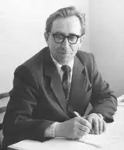
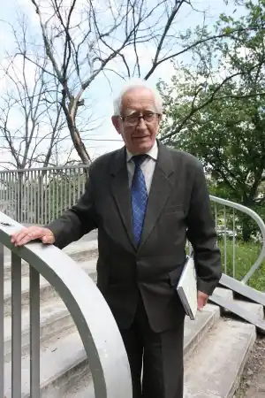
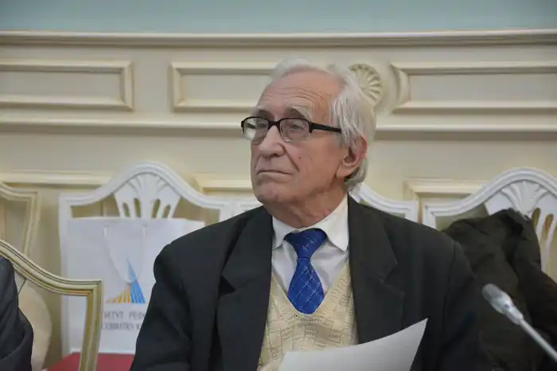

Народився Іван Пилипович Ющук фактично 1932 р. (але записаний як народжений 1933) на території, окупованій Польщею — у с. Черників, тепер — Чорників, Володимирського району, Волинської області. Батько проходив строкову службу в Польській армії, вдома успішно займався фермерством, допомагаючи вбогим сусідам. Учився спочатку в рідному селі, потім — у сусідньому, середню школу закінчив у м. Устилузі. В 1951 році вступив до Київського державного університету імені Тараса Шевченка на хімічний факультет, але незабаром покинув навчання та майже рік працював на будівництві м. Нововолинська.
У 1952 —1957 роках навчався у Львівському державному університеті на слов'янському відділенні богемістіки (чеська мова й література), де набув спеціальності філолога-славіста й учителя української мови. Два роки потому вчителював. Навчався в аспірантурі Інституту літератури ім Т. Шевченка АН УРСР зі спеціальності "сербська література".
У 1962 — 1964 роках працював молодшим науковим співробітником Інституту літератури АН УРСР. З 1964 р. — кандидат філологічних наук (кандидатська дисертація — "Т. Г. Шевченко в літературах народів Югославії"). Працював також над дисертацією про сербського письменника Іво Андрича, але через національні переконання був звільнений з інституту. З 1967 до 1969 року завідував відділом методики мови часопису "Українська мова і література в школі" (нині — "Дивослово"). З 1969 р. — викладач у Київському педагогічному інституті іноземних мов (тепер — Київський лінгвістичний університет), де спочатку викладав українську мову на підготовчому відділенні; потім викладав вступ до мовознавства на стаціонарі. З 1994 року й дотепер — завідувач кафедри слов'янської філології, а з 1996 року — проректор Міжнародного інституту лінгвістики і права (тепер — Київський міжнародний університет), викладав українську мову майбутнім журналістам. Досліджував українсько-югославські літературні зв'язки, літературу південних слов'ян тощо. Очолював товариство "Україна — Сербія". Був ведучим передачі "Як ми говоримо" на радіоканалі "Культура". 5 липня 2011 року Івана Ющука обрано головою Київського міського об'єднання Всеукраїнського товариства "Просвіта" ім. Тараса Шевченка. Останні роки був членом Головної ради Всеукраїнського товариства "Просвіта" ім. Т. Шевченка. Займав активну громадську позицію, критикуючи політику президента й уряду: "Україна ще перебуває в стані колонії. І керівники поводяться як колонізатори. І про цю землю і людей їм байдуже". На виборах до Верховної Ради 2012 року публічно підтримав Всеукраїнське об'єднання "Свобода". Помер зранку 27 березня 2021 року в Києві.